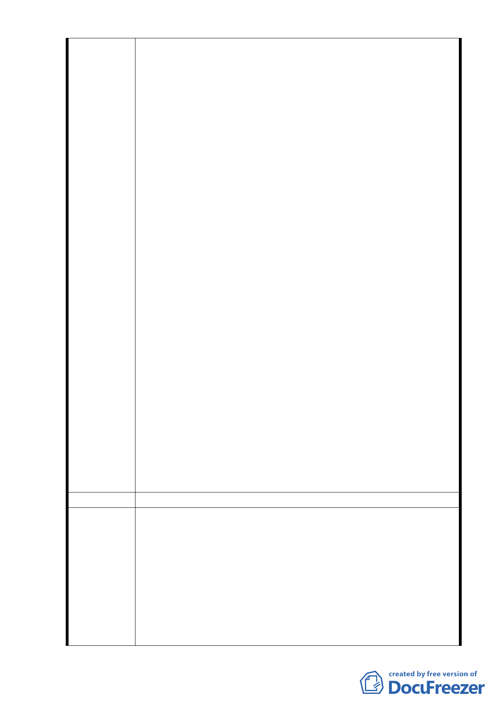

（一）本計畫所提路段緊鄰成功高中及青島國宅，自捷運通車
後，更為民眾前往捷運善導寺站第 4 號出口主要通道。
於平日上班上學尖峰時間，人潮、車潮相當頻繁。且因
善導寺站其餘出入口皆位於主要幹道旁，此捷運出口於
巷道中，經常做為轎車接駁捷運乘客上下處；儘管計畫
內提及退縮五尺做為行人通道使用，屆時若有大型商業
建物座落於此，善導寺站週邊將無較寬廣之腹地可提供
轎車接駁捷運乘客之處。
（二）旨揭計畫案第七頁計劃目標第二點：『滿足開放陸客來
臺政策所增之旅館住宿需求』，惟北市頗負盛名之高級
飯店喜來登即在此基地北側，林森北路與北平東路交叉
口亦有平價之商務旅館家美飯店，往南忠孝新生站亦有
八方美學及凱統飯店，往北台北車站及西門町，更有多
所新舊旅館供觀光旅客使用，善導寺站暨非主要商業
區、亦非本市主要觀光景點，何需於此再興建一觀光旅
館？
（三）自「台北好好看」將此基地整理做為公園，不僅市容美
化，且人潮得到紓解，常見學生將此做為臨時集合地
點，或社區長者散步聊天之用。雖不遠處有華山大草原
及民主廣場等大型集會場所，林森北路以南、杭州南路
以北、忠孝東路西側並無供民眾使用之開放空間。青島
社區內長者極多，不需橫越幹道就有社區小型公園休
憩，可說是社區民眾心願。
（四）旨揭計畫案第七頁計劃目標第三點：『挹注市府財政收
益』現國家財政困難，整頓國有財產以換取最大財政利
益，確是立意良善。然政府除財政收支外，另一重要責
任，是否也應考慮人民看不見的生活品質，以當地居民
心情考慮，而非使當地居民及學生飽受建築工程噪音及
廢氣之苦後，換來的是水泥地、噪音及永無寧日之生活。
建議辦法
（一）本計畫藉由林森南路 11 巷北移，將計畫道路寬度調整
為 14.5 公尺後，除規劃雙向車道外，亦規劃人行、自
行車及設施帶空間，除可提升交通安全，亦可改善地區
市府回應
交通系統並使捷運轉乘接駁人行、車行動線更加順暢，
說明
落實「人本交通」及大眾運輸導向發展之規劃。
（二）自 2008 年開放陸客來臺觀光，迄今已超過 730 萬人次
來臺，為臺灣第一大觀光客源市場；且交通部觀光局刻
研議提高大陸觀光團總量及陸客自由行上限倍增，故陸
- 12 -